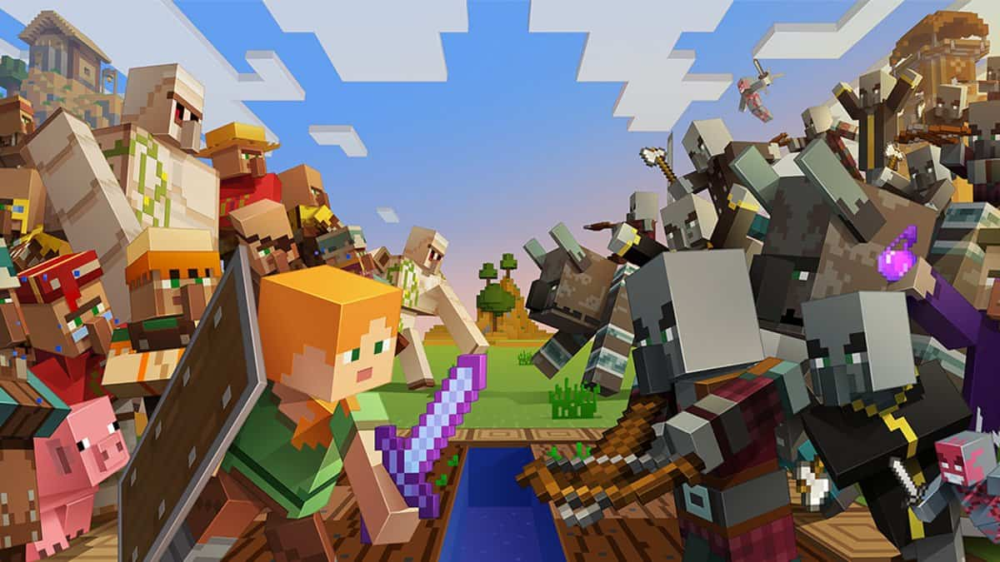
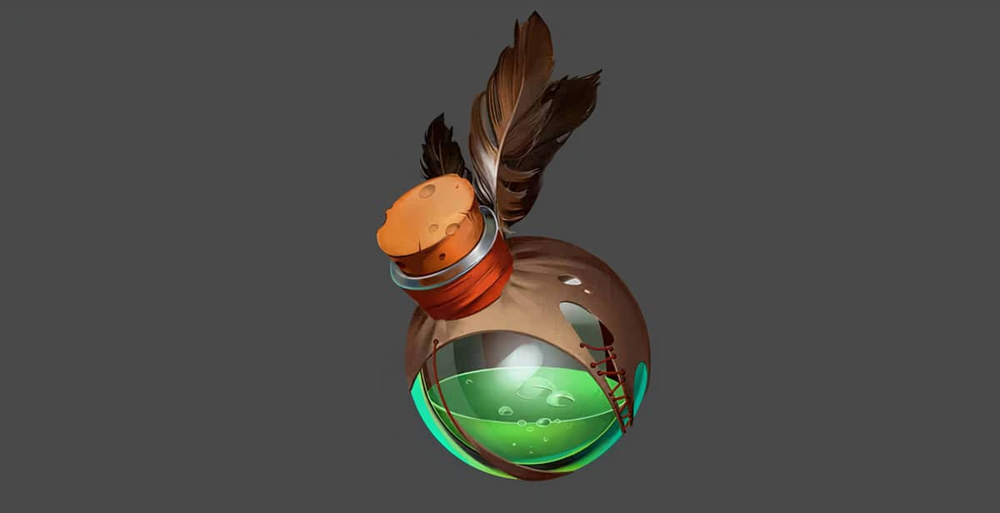
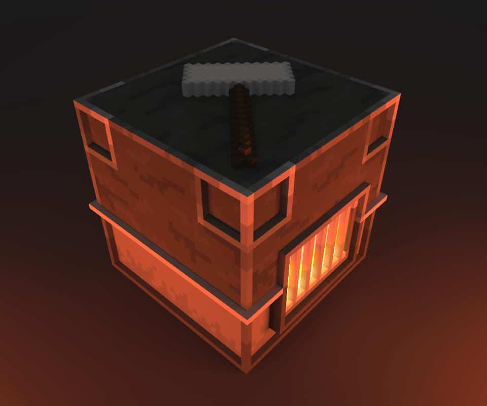

Mobs còn được gọi lại các loài động vật, quái vật trong Minecraft. Hầu như ai cũng biết chúng có thể là những con thú rất tinh nghịch như gấu trúc thích lăn lộn, hay những con quái vật rất nguy hiểm như thây ma, người xương, và creeper, … v.v

80 Loại Mobs Trong Minecraft

Công thức chế tạo thuốc trong minecraft
Thay vì mỗi tối cứ phải ru rủ trong nhà vì sợ hãi bọn quái vật ngoài kia, thì bạn nên học cách pha chế thuốc để có thể cân và xử lý hết bọn chúng. Vì sao nó lại đặc biệt đến như vậy? Lọ thuốc trong Minecraft có rất nhiều loại, và mỗi loại lại có một cái hay riêng một hiệu ứng riêng.

Công thức nung nấu đồ trong minecraft
Ngoài những công thức chế tạo trong bàn chế tạo, lò nung cũng có những công thức riêng mà có thể bạn chưa biết, chẳng hạn như nung nấu cát ra kính, nung nấu xương rồng ra bột nhuộm xanh lá, … v.v